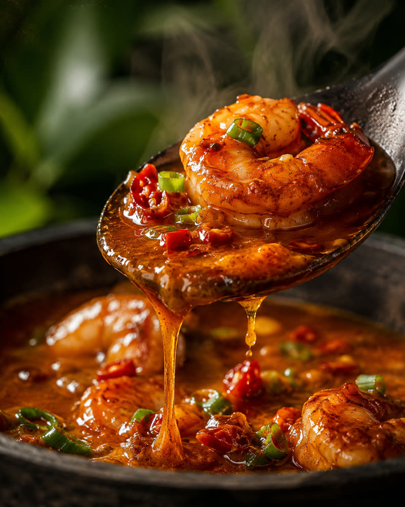
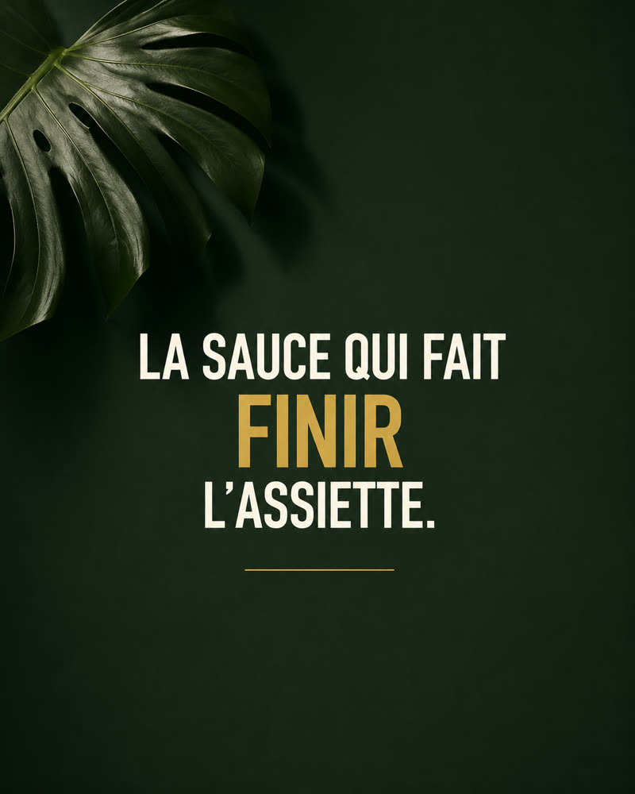
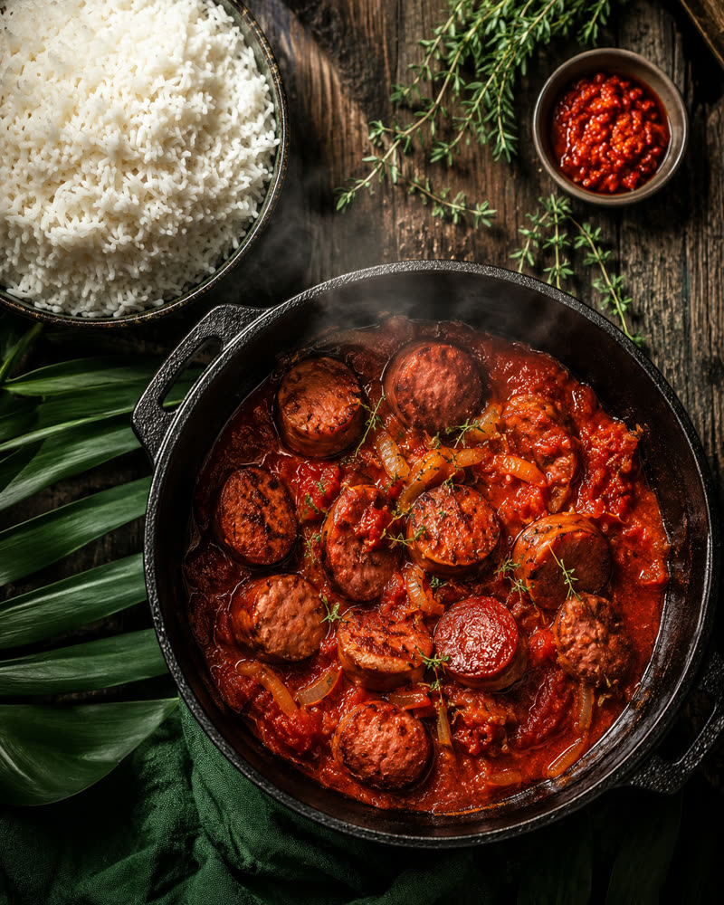
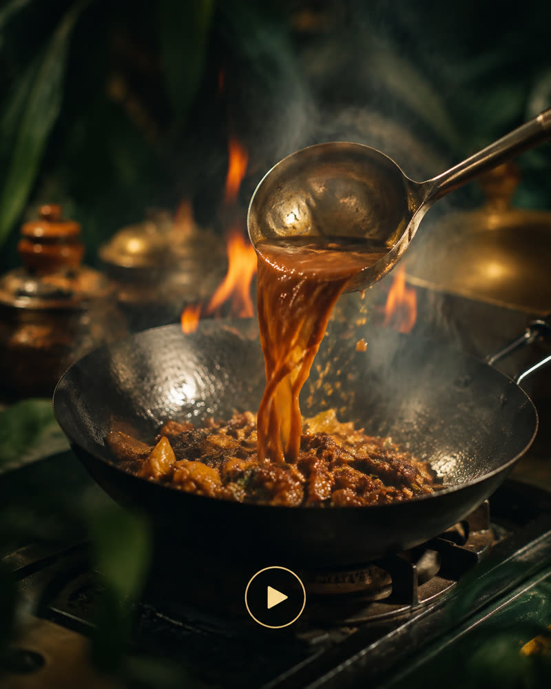
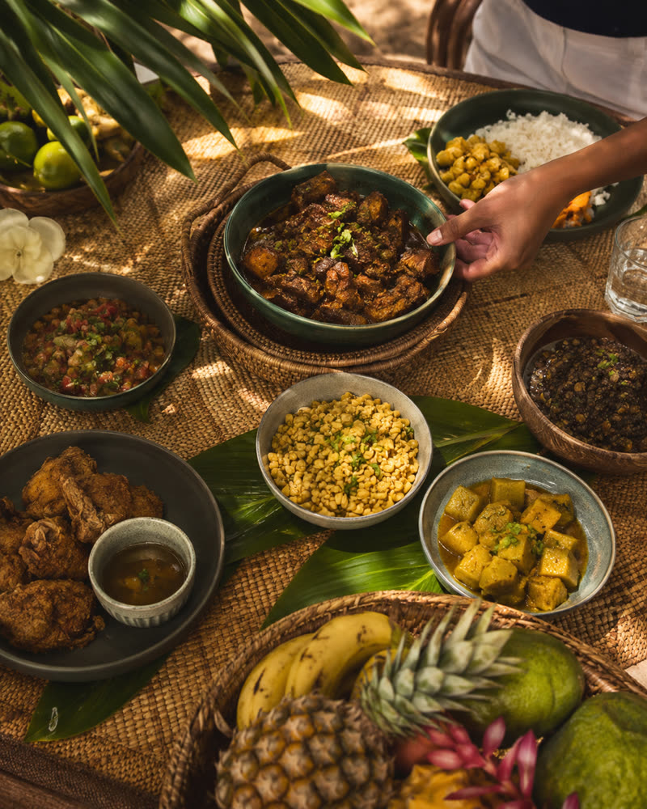
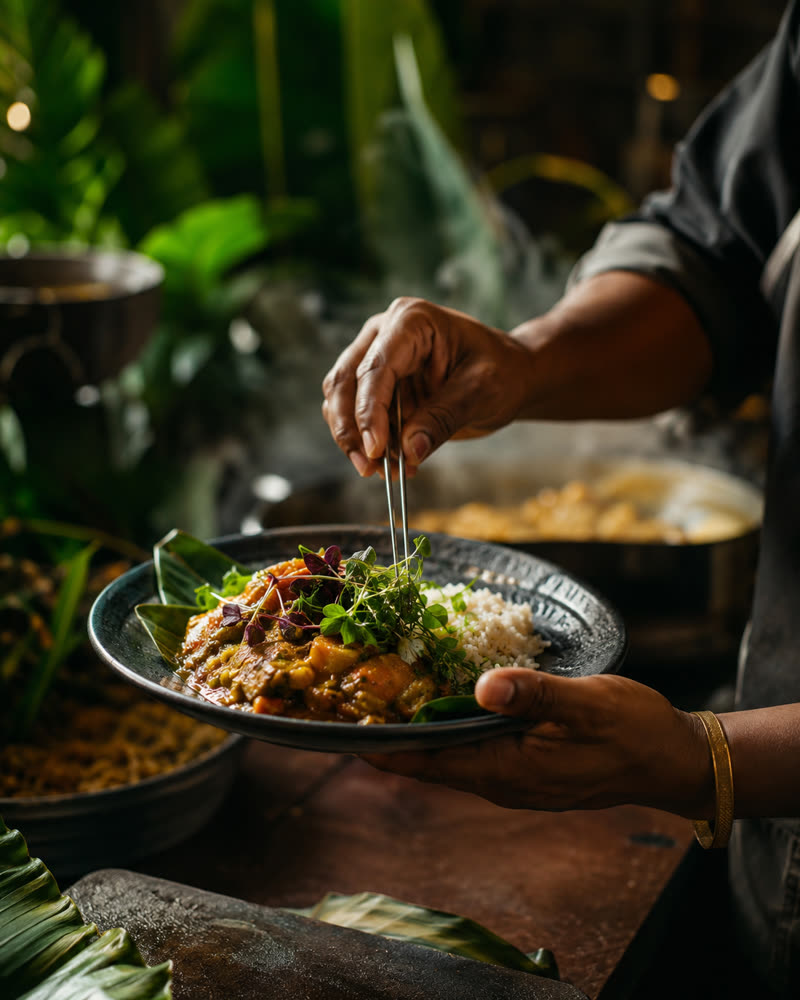
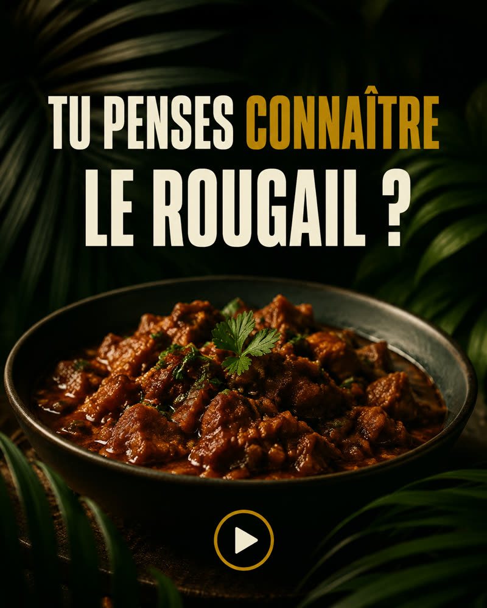
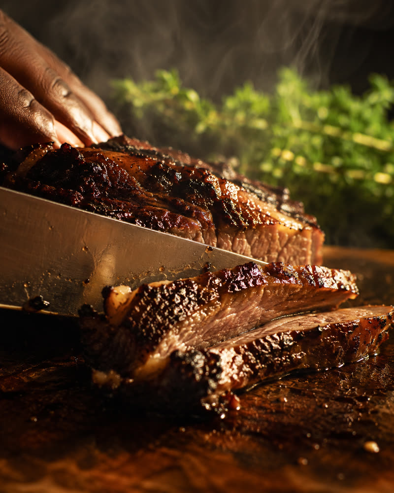
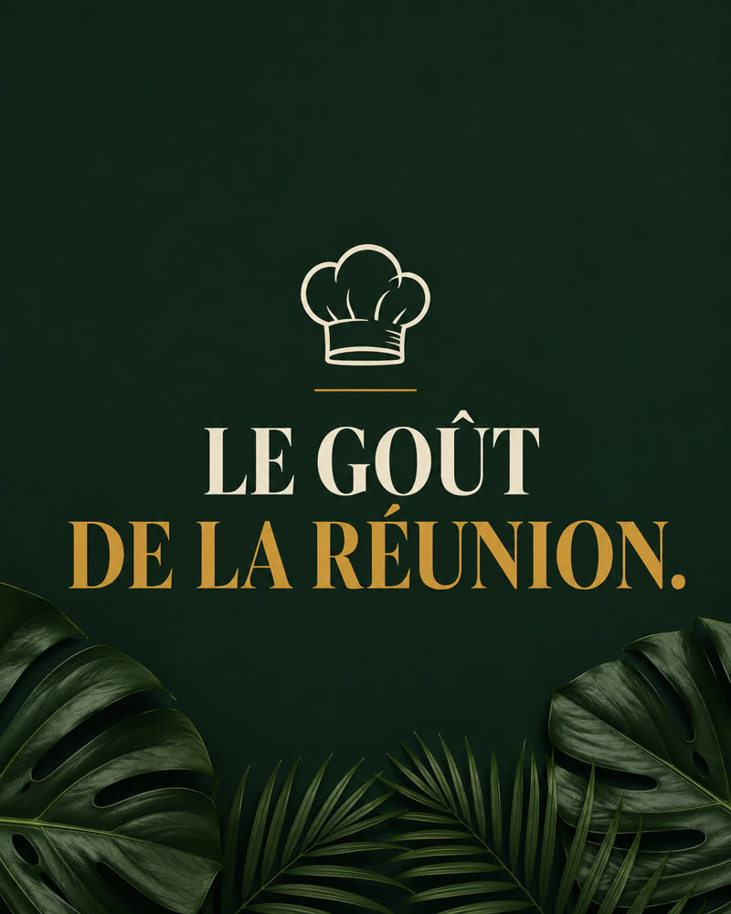

Vert foncé, doré, crème, végétation tropicale, premium — l’identité est conservée à la lettre. Ce qui change, c’est le rythme : moins de cartes de texte, des photos qui donnent faim, des cadrages qui varient, et de l’humain.









L’ordre compte : les tuiles graphiques sont en 2, 4, 7 et 9 — dispersées, jamais alignées en colonne.
| 3 food | La sauce crevette en macro, le rougail vu du dessus, la viande tranchée au couteau. Vapeur, sauce qui coule, texture du riz. |
| 2 reels | La sauce versée dans un wok en flammes, et le hook « Tu penses connaître le rougail ? » — première seconde forte, pastille de lecture discrète. |
| 1 culture | La table partagée vue du dessus : feuilles de bananier, ananas, une main qui se sert. Un repas de famille, pas une carte postale. |
| 1 coulisses | Deux mains qui dressent une assiette. Aucun visage — des mains suffisent à humaniser. |
| 1 hook | « La sauce qui fait finir l’assiette. » Le mot fort en doré, le reste en crème. |
| 1 branding | « Le goût de La Réunion. » Le seul visuel qui porte l’emblème. |
| Texte sur vert | De cinq cartes à deux. Le feed ne ressemble plus à un catalogue de plats. |
| Gourmandise | Gros plans, sauces brillantes, vapeur visible, profondeur de champ. La correction n° 1 du brief. |
| Cadrages | Macro à 45°, vue du dessus, action, cuisine, plan rapproché. Plus jamais l’assiette entière de face. |
| Titres | Des accroches, pas des noms de plat. « Sauce crevette » devient « la sauce qui fait finir l’assiette ». |
| Humain | Trois tuiles montrent des mains : dressage, service, découpe. |
| Le doré | Redevenu un accent. Il ne porte que le mot fort et un filet. Ce sont les photos qui portent la couleur. |
| Longueur | Sept mots au maximum par visuel. Lisible en moins d’une seconde sur un téléphone. |
| Le logo | Sur une seule tuile, pas sur les neuf. |